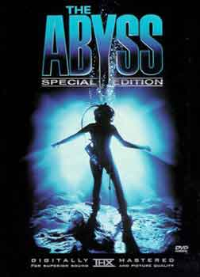

Abyss Trip
Items of Interest:

I had seen the Abyss some time ago, it was an OK movie, interesting, but nothing that I would call life changing or overly inspiring. Back in 2000, I purchased the Abyss Special Edition DVD. That DVD had a tremendious amount of extra material in it. Somewhere on the DVD it mentioned that the movie was filmed at an abandoned incomplete nuclear power plant in Gaffney, South Carolina.At the time I was living in Greenville, South Carolina which is only 40 miles away from Gaffney. When the DVD stated that the movie sets still existed, I figured it would be an interesting thing to see since most movie sets are struck immediately after filming. This set had been around for about 12 years! The property where the set resides has had a number of people with ideas come and go over the years. One person had bought it planning to put a religious based theme park there and sold all the Abyss sets he could. That theme park idea fell through. Next, a man named Ed Owensby purchased the grounds and put a small time movie studio there.
I called around and tracked down the Mr. Owensby and he was trying to sell the property and didn't want any visitors there for various reasons. I pretty well let the matter drop - for a while.
During my quest to track the owner down I had posted a message on a Gaffney Internet Message board. Out of the blue in early April, 2001 I received a phone call. A local family was looking to band with a number of other families and buy the property. They were nice enough to invite me to come to the site. Seeing my chance, I jumped on it.
On April 13, 2001 I went to the site and shot the Ground Pictures.
A few weeks later I flew over the site and took the Aerial Pictures.
If you would like to know more about the Abyss, see the IMDB listing.
Where is it? Well, for one know this: it's private property and getting caught on it would likely be a bad career move to say the least. Someone managed to do one thing I've tried to do off and on but never was able to - found it on Google maps!.